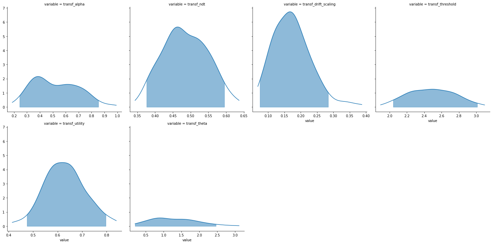

[1]:
import rlssm
import pandas as pd
import os
/Users/Khamir/opt/anaconda3/lib/python3.7/site-packages/statsmodels/tools/_testing.py:19: FutureWarning: pandas.util.testing is deprecated. Use the functions in the public API at pandas.testing instead.
import pandas.util.testing as tm
Import the grouped data¶
[2]:
par_path = os.path.abspath(os.path.join(os.getcwd(), os.pardir))
data_path = os.path.join(par_path, 'data/data_experiment.csv')
data = pd.read_csv(data_path, index_col=0)
data = data[data.participant == 10].reset_index(drop=True)
data['block_label'] += 1
# data = data[data['trial_block'] == 1]
data
INFO:numexpr.utils:NumExpr defaulting to 4 threads.
[2]:
| participant | block_label | trial_block | f_cor | f_inc | cor_option | inc_option | times_seen | rt | accuracy | |
|---|---|---|---|---|---|---|---|---|---|---|
| 0 | 10 | 1.0 | 1.0 | 61.0 | 52.0 | 4 | 3 | 1.0 | 1.285418 | 0.0 |
| 1 | 10 | 1.0 | 2.0 | 54.0 | 37.0 | 4 | 2 | 1.5 | 1.577622 | 0.0 |
| 2 | 10 | 1.0 | 3.0 | 51.0 | 51.0 | 4 | 3 | 2.5 | 1.564731 | 0.0 |
| 3 | 10 | 1.0 | 4.0 | 50.0 | 35.0 | 3 | 1 | 2.0 | 1.217245 | 1.0 |
| 4 | 10 | 1.0 | 5.0 | 59.0 | 50.0 | 4 | 2 | 3.0 | 1.929781 | 0.0 |
| ... | ... | ... | ... | ... | ... | ... | ... | ... | ... | ... |
| 234 | 10 | 3.0 | 76.0 | 50.0 | 33.0 | 2 | 1 | 36.5 | 1.479663 | 1.0 |
| 235 | 10 | 3.0 | 77.0 | 30.0 | 36.0 | 2 | 1 | 37.5 | 1.011038 | 1.0 |
| 236 | 10 | 3.0 | 78.0 | 51.0 | 47.0 | 4 | 2 | 39.0 | 1.367184 | 1.0 |
| 237 | 10 | 3.0 | 79.0 | 40.0 | 39.0 | 2 | 1 | 39.0 | 1.297691 | 1.0 |
| 238 | 10 | 3.0 | 80.0 | 41.0 | 32.0 | 2 | 1 | 40.0 | 1.407213 | 1.0 |
239 rows × 10 columns
Initialise the model¶
[3]:
model = rlssm.RLRDModel_2A(1,
separate_learning_rates=False,
nonlinear_mapping=True)
Using cached StanModel
[4]:
model.family, model.model_label, model.hierarchical_levels
[4]:
('RLRDM_2A', 'RLRDM_2A_nonlin', 1)
Fit¶
[5]:
# sampling parameters
n_iter = 700
n_chains = 2
n_thin = 5
# learning parameters
K = 4 # n options
initial_value_learning = 17.5 # intitial value (Q0)
# bayesian model
alpha_priors = None
drift_scaling_priors = None
threshold_priors = None
ndt_priors = None
[6]:
model_fit = model.fit(data,
K,
initial_value_learning,
alpha_priors=alpha_priors,
drift_scaling_priors=drift_scaling_priors,
threshold_priors=threshold_priors,
ndt_priors=ndt_priors,
thin = n_thin,
iter = n_iter,
chains = n_chains)
WARNING:pystan:Maximum (flat) parameter count (1000) exceeded: skipping diagnostic tests for n_eff and Rhat.
To run all diagnostics call pystan.check_hmc_diagnostics(fit)
Checks MCMC diagnostics:
n_eff / iter looks reasonable for all parameters
0.0 of 140 iterations ended with a divergence (0.0%)
0 of 140 iterations saturated the maximum tree depth of 10 (0.0%)
E-BFMI indicated no pathological behavior
get Rhat¶
[7]:
model_fit.rhat.describe()
[7]:
| rhat | |
|---|---|
| count | 6.000000 |
| mean | 0.996746 |
| std | 0.011915 |
| min | 0.990302 |
| 25% | 0.990800 |
| 50% | 0.992271 |
| 75% | 0.993907 |
| max | 1.020868 |
[8]:
model_fit.rhat.head()
[8]:
| rhat | variable | |
|---|---|---|
| 0 | 0.994408 | alpha |
| 1 | 0.990302 | ndt |
| 2 | 0.990354 | drift_scaling |
| 3 | 0.992406 | threshold |
| 4 | 0.992137 | utility |
get wAIC¶
[9]:
model_fit.waic
[9]:
{'lppd': -223.04210795103666,
'p_waic': 5.204560070490922,
'waic': 456.49333604305514,
'waic_se': 28.883462976721326}
Posteriors¶
[10]:
model_fit.samples
[10]:
| chain | draw | transf_alpha | transf_ndt | transf_drift_scaling | transf_threshold | transf_utility | transf_theta | |
|---|---|---|---|---|---|---|---|---|
| 0 | 0 | 68 | 0.536117 | 0.507470 | 0.126909 | 2.422901 | 0.688132 | 2.243605 |
| 1 | 0 | 3 | 0.378302 | 0.499997 | 0.104026 | 2.421005 | 0.758528 | 0.911911 |
| 2 | 0 | 33 | 0.524078 | 0.454991 | 0.132048 | 2.537707 | 0.692881 | 0.301672 |
| 3 | 0 | 16 | 0.371392 | 0.504272 | 0.124837 | 2.373213 | 0.682801 | 1.663206 |
| 4 | 0 | 67 | 0.451166 | 0.377950 | 0.138795 | 3.013431 | 0.702335 | 1.937401 |
| ... | ... | ... | ... | ... | ... | ... | ... | ... |
| 135 | 1 | 4 | 0.423842 | 0.517134 | 0.198868 | 2.359683 | 0.575949 | 0.858403 |
| 136 | 1 | 56 | 0.455215 | 0.427550 | 0.080578 | 2.673299 | 0.823003 | 0.849018 |
| 137 | 1 | 12 | 0.589387 | 0.450636 | 0.147596 | 2.740127 | 0.670414 | 3.060265 |
| 138 | 1 | 42 | 0.433838 | 0.562461 | 0.158285 | 2.192662 | 0.620046 | 0.842702 |
| 139 | 1 | 64 | 0.356876 | 0.548719 | 0.223269 | 2.250039 | 0.539537 | 1.649023 |
140 rows × 8 columns
[11]:
model_fit.trial_samples
[11]:
OrderedDict([('drift_cor_t',
array([[0.98836633, 2.27678197, 2.17267505, ..., 2.58947794, 1.90243605,
1.79268787],
[0.94788118, 2.06285088, 2.12698133, ..., 2.75048057, 1.9695311 ,
1.89447183],
[0.97084809, 2.3407099 , 2.24470932, ..., 2.698084 , 1.95960859,
1.84566371],
...,
[1.12033315, 2.5917658 , 2.4063222 , ..., 2.83285861, 2.10319045,
1.96596841],
[0.96127035, 1.92226404, 1.92922742, ..., 2.32599179, 1.76071219,
1.69337589],
[1.09797791, 1.84674748, 1.89890681, ..., 2.2967728 , 1.82003336,
1.77501195]])),
('drift_inc_t',
array([[9.88366333e-01, 3.71204996e-02, 1.20550335e+00, ...,
9.32251019e-01, 1.34480688e+00, 1.49153087e+00],
[9.47881177e-01, 1.73028311e-01, 1.02744042e+00, ...,
1.04033648e+00, 1.38349500e+00, 1.49474419e+00],
[9.70848092e-01, 2.99233904e-07, 1.19359687e+00, ...,
9.21285495e-01, 1.36176292e+00, 1.51633558e+00],
...,
[1.12033315e+00, 5.25344993e-02, 1.41699026e+00, ...,
1.00773200e+00, 1.48819320e+00, 1.66403466e+00],
[9.61270354e-01, 5.18749585e-02, 1.06862053e+00, ...,
9.93554713e-01, 1.30398298e+00, 1.40508325e+00],
[1.09797791e+00, 4.47291912e-01, 1.14699401e+00, ...,
1.18596843e+00, 1.42739893e+00, 1.50086523e+00]])),
('threshold_t',
array([[2.42290139, 2.42290139, 2.42290139, ..., 2.42290139, 2.42290139,
2.42290139],
[2.42100515, 2.42100515, 2.42100515, ..., 2.42100515, 2.42100515,
2.42100515],
[2.53770691, 2.53770691, 2.53770691, ..., 2.53770691, 2.53770691,
2.53770691],
...,
[2.74012708, 2.74012708, 2.74012708, ..., 2.74012708, 2.74012708,
2.74012708],
[2.1926622 , 2.1926622 , 2.1926622 , ..., 2.1926622 , 2.1926622 ,
2.1926622 ],
[2.2500386 , 2.2500386 , 2.2500386 , ..., 2.2500386 , 2.2500386 ,
2.2500386 ]])),
('ndt_t',
array([[0.50747039, 0.50747039, 0.50747039, ..., 0.50747039, 0.50747039,
0.50747039],
[0.49999704, 0.49999704, 0.49999704, ..., 0.49999704, 0.49999704,
0.49999704],
[0.45499057, 0.45499057, 0.45499057, ..., 0.45499057, 0.45499057,
0.45499057],
...,
[0.45063617, 0.45063617, 0.45063617, ..., 0.45063617, 0.45063617,
0.45063617],
[0.56246053, 0.56246053, 0.56246053, ..., 0.56246053, 0.56246053,
0.56246053],
[0.54871856, 0.54871856, 0.54871856, ..., 0.54871856, 0.54871856,
0.54871856]]))])
[12]:
model_fit.plot_posteriors(height=5, show_intervals='HDI');

Posterior predictives¶
[13]:
pp = model_fit.get_posterior_predictives_df(n_posterior_predictives=100)
pp
[13]:
| variable | rt | ... | accuracy | ||||||||||||||||||
|---|---|---|---|---|---|---|---|---|---|---|---|---|---|---|---|---|---|---|---|---|---|
| trial | 1 | 2 | 3 | 4 | 5 | 6 | 7 | 8 | 9 | 10 | ... | 230 | 231 | 232 | 233 | 234 | 235 | 236 | 237 | 238 | 239 |
| sample | |||||||||||||||||||||
| 1 | 1.370470 | 1.952470 | 1.337470 | 1.350470 | 1.026470 | 1.324470 | 1.388470 | 1.676470 | 1.187470 | 1.260470 | ... | 0.0 | 1.0 | 0.0 | 1.0 | 1.0 | 1.0 | 1.0 | 1.0 | 1.0 | 0.0 |
| 2 | 1.525997 | 2.562997 | 0.936997 | 1.103997 | 1.732997 | 1.296997 | 1.148997 | 1.228997 | 1.085997 | 1.093997 | ... | 1.0 | 1.0 | 1.0 | 1.0 | 0.0 | 1.0 | 1.0 | 1.0 | 1.0 | 0.0 |
| 3 | 2.069991 | 2.564991 | 1.993991 | 1.431991 | 2.467991 | 0.786991 | 0.933991 | 1.627991 | 1.112991 | 1.269991 | ... | 1.0 | 1.0 | 0.0 | 1.0 | 1.0 | 0.0 | 0.0 | 0.0 | 0.0 | 0.0 |
| 4 | 2.211272 | 1.016272 | 1.084272 | 2.159272 | 2.545272 | 1.422272 | 2.039272 | 1.079272 | 1.552272 | 6.388272 | ... | 0.0 | 0.0 | 1.0 | 1.0 | 1.0 | 1.0 | 1.0 | 1.0 | 1.0 | 1.0 |
| 5 | 1.629950 | 1.942950 | 1.108950 | 1.378950 | 1.484950 | 1.048950 | 1.118950 | 1.583950 | 1.187950 | 1.760950 | ... | 1.0 | 0.0 | 1.0 | 1.0 | 1.0 | 0.0 | 1.0 | 1.0 | 1.0 | 1.0 |
| ... | ... | ... | ... | ... | ... | ... | ... | ... | ... | ... | ... | ... | ... | ... | ... | ... | ... | ... | ... | ... | ... |
| 96 | 4.177182 | 2.337182 | 1.211182 | 1.040182 | 2.172182 | 1.500182 | 1.206182 | 1.359182 | 1.215182 | 1.849182 | ... | 1.0 | 1.0 | 1.0 | 1.0 | 1.0 | 0.0 | 0.0 | 0.0 | 0.0 | 1.0 |
| 97 | 1.499919 | 1.080919 | 1.492919 | 1.031919 | 0.944919 | 1.362919 | 1.008919 | 2.164919 | 1.657919 | 1.454919 | ... | 1.0 | 1.0 | 1.0 | 0.0 | 1.0 | 0.0 | 1.0 | 1.0 | 1.0 | 1.0 |
| 98 | 3.060788 | 1.324788 | 1.605788 | 1.277788 | 1.261788 | 0.981788 | 1.247788 | 1.669788 | 1.113788 | 1.326788 | ... | 1.0 | 0.0 | 1.0 | 1.0 | 1.0 | 0.0 | 0.0 | 1.0 | 1.0 | 1.0 |
| 99 | 4.137661 | 1.247661 | 1.160661 | 1.516661 | 1.282661 | 1.523661 | 2.893661 | 1.296661 | 1.221661 | 1.770661 | ... | 1.0 | 1.0 | 1.0 | 1.0 | 1.0 | 1.0 | 1.0 | 1.0 | 0.0 | 1.0 |
| 100 | 1.570465 | 2.446465 | 2.476465 | 3.149465 | 1.566465 | 1.169465 | 1.287465 | 4.078465 | 1.597465 | 1.098465 | ... | 1.0 | 1.0 | 1.0 | 1.0 | 1.0 | 1.0 | 1.0 | 0.0 | 1.0 | 1.0 |
100 rows × 478 columns
[14]:
pp_summary = model_fit.get_posterior_predictives_summary(n_posterior_predictives=100)
pp_summary
[14]:
| mean_accuracy | mean_rt | skewness | quant_10_rt_incorrect | quant_30_rt_incorrect | quant_50_rt_incorrect | quant_70_rt_incorrect | quant_90_rt_incorrect | quant_10_rt_correct | quant_30_rt_correct | quant_50_rt_correct | quant_70_rt_correct | quant_90_rt_correct | |
|---|---|---|---|---|---|---|---|---|---|---|---|---|---|
| sample | |||||||||||||
| 1 | 0.682008 | 1.551194 | 0.989136 | 1.122470 | 1.326970 | 1.501970 | 1.695970 | 2.172470 | 1.068070 | 1.290270 | 1.436470 | 1.668870 | 2.114070 |
| 2 | 0.774059 | 1.506859 | 1.031838 | 1.108197 | 1.315197 | 1.471997 | 1.684297 | 2.131097 | 1.093197 | 1.251997 | 1.412997 | 1.598597 | 2.046797 |
| 3 | 0.728033 | 1.513936 | 2.377135 | 1.123991 | 1.379791 | 1.565991 | 1.811191 | 2.167991 | 1.053291 | 1.278791 | 1.397491 | 1.555991 | 1.912591 |
| 4 | 0.694561 | 1.488180 | 1.233508 | 1.082472 | 1.255472 | 1.426272 | 1.622472 | 1.856672 | 1.082772 | 1.249272 | 1.417772 | 1.640272 | 1.986772 |
| 5 | 0.719665 | 1.506523 | 1.394180 | 1.082750 | 1.248350 | 1.446950 | 1.756150 | 2.093950 | 1.081350 | 1.265250 | 1.458450 | 1.618050 | 1.936150 |
| ... | ... | ... | ... | ... | ... | ... | ... | ... | ... | ... | ... | ... | ... |
| 96 | 0.732218 | 1.572818 | 1.593261 | 1.152382 | 1.289482 | 1.419182 | 1.702682 | 2.255882 | 1.083982 | 1.258382 | 1.478182 | 1.720182 | 2.110782 |
| 97 | 0.640167 | 1.532492 | 1.362617 | 1.058919 | 1.254919 | 1.515419 | 1.763919 | 2.157419 | 1.080119 | 1.263119 | 1.423919 | 1.590919 | 2.030319 |
| 98 | 0.640167 | 1.507373 | 1.294456 | 1.118788 | 1.268288 | 1.419288 | 1.589288 | 1.975288 | 1.074388 | 1.273588 | 1.434788 | 1.660588 | 2.121388 |
| 99 | 0.736402 | 1.496736 | 0.788713 | 1.145261 | 1.229461 | 1.414661 | 1.712861 | 2.087661 | 1.042161 | 1.255661 | 1.469161 | 1.637161 | 2.061661 |
| 100 | 0.715481 | 1.534992 | 1.413831 | 1.112465 | 1.274865 | 1.420965 | 1.667865 | 2.042065 | 1.138465 | 1.322465 | 1.443465 | 1.637465 | 2.000465 |
100 rows × 13 columns
[15]:
g = model_fit.plot_mean_posterior_predictives(n_posterior_predictives=100, figsize=(20,8), show_intervals='HDI')

[16]:
model_fit.plot_quantiles_posterior_predictives(n_posterior_predictives=100, kind='shades');

Grouped¶
[17]:
import numpy as np
[18]:
data['choice_pair'] = 'AB'
data.loc[(data.cor_option == 3) & (data.inc_option == 1), 'choice_pair'] = 'AC'
data.loc[(data.cor_option == 4) & (data.inc_option == 2), 'choice_pair'] = 'BD'
data.loc[(data.cor_option == 4) & (data.inc_option == 3), 'choice_pair'] = 'CD'
data['block_bins'] = pd.cut(data.trial_block, 8, labels=np.arange(1, 9))
[19]:
data.head()
[19]:
| index | participant | block_label | trial_block | f_cor | f_inc | cor_option | inc_option | times_seen | rt | accuracy | accuracy_rescale | choice_pair | block_bins | |
|---|---|---|---|---|---|---|---|---|---|---|---|---|---|---|
| 0 | 0 | 10 | 1.0 | 1.0 | 61.0 | 52.0 | 4 | 3 | 1.0 | 1.285418 | 0.0 | 2 | CD | 1 |
| 1 | 1 | 10 | 1.0 | 2.0 | 54.0 | 37.0 | 4 | 2 | 1.5 | 1.577622 | 0.0 | 2 | BD | 1 |
| 2 | 2 | 10 | 1.0 | 3.0 | 51.0 | 51.0 | 4 | 3 | 2.5 | 1.564731 | 0.0 | 2 | CD | 1 |
| 3 | 3 | 10 | 1.0 | 4.0 | 50.0 | 35.0 | 3 | 1 | 2.0 | 1.217245 | 1.0 | 1 | AC | 1 |
| 4 | 4 | 10 | 1.0 | 5.0 | 59.0 | 50.0 | 4 | 2 | 3.0 | 1.929781 | 0.0 | 2 | BD | 1 |
[20]:
model_fit.get_grouped_posterior_predictives_summary(
grouping_vars=['block_label', 'choice_pair'],
quantiles=[.3, .5, .7],
n_posterior_predictives=100)
[20]:
| mean_accuracy | mean_rt | skewness | quant_30_rt_incorrect | quant_30_rt_correct | quant_50_rt_incorrect | quant_50_rt_correct | quant_70_rt_incorrect | quant_70_rt_correct | |||
|---|---|---|---|---|---|---|---|---|---|---|---|
| block_label | choice_pair | sample | |||||||||
| 1.0 | AB | 1 | 0.70 | 1.560070 | 0.717347 | 1.334470 | 1.350770 | 1.660470 | 1.478470 | 1.839970 | 1.601270 |
| 2 | 0.65 | 1.441397 | 0.235771 | 1.281797 | 1.212597 | 1.322997 | 1.375997 | 1.775397 | 1.654397 | ||
| 3 | 0.80 | 1.571191 | 0.352267 | 1.591791 | 1.350491 | 1.684991 | 1.562491 | 1.772091 | 1.674991 | ||
| 4 | 0.75 | 1.665772 | 1.516223 | 1.341272 | 1.333472 | 1.429272 | 1.481272 | 1.447672 | 1.801872 | ||
| 5 | 0.65 | 1.627250 | 0.203663 | 1.370950 | 1.493750 | 1.399950 | 1.676950 | 1.538950 | 1.933350 | ||
| ... | ... | ... | ... | ... | ... | ... | ... | ... | ... | ... | ... |
| 3.0 | CD | 96 | 0.45 | 1.295432 | 1.421073 | 1.077182 | 1.164982 | 1.243182 | 1.273182 | 1.361182 | 1.325382 |
| 97 | 0.55 | 1.366819 | 0.079811 | 1.140519 | 1.362919 | 1.291919 | 1.414919 | 1.428719 | 1.437919 | ||
| 98 | 0.60 | 1.375838 | 1.496528 | 1.338288 | 1.143988 | 1.351788 | 1.240788 | 1.435488 | 1.294188 | ||
| 99 | 0.45 | 1.424311 | 0.270949 | 1.406661 | 1.154061 | 1.586661 | 1.316661 | 1.621661 | 1.391861 | ||
| 100 | 0.50 | 1.526615 | 0.835327 | 1.222165 | 1.460165 | 1.458965 | 1.608465 | 1.535265 | 1.658165 |
1200 rows × 9 columns
[21]:
model_fit.get_grouped_posterior_predictives_summary(
grouping_vars=['block_bins'],
quantiles=[.3, .5, .7],
n_posterior_predictives=100)
[21]:
| mean_accuracy | mean_rt | skewness | quant_30_rt_incorrect | quant_30_rt_correct | quant_50_rt_incorrect | quant_50_rt_correct | quant_70_rt_incorrect | quant_70_rt_correct | ||
|---|---|---|---|---|---|---|---|---|---|---|
| block_bins | sample | |||||||||
| 1 | 1 | 0.666667 | 1.593304 | 2.268706 | 1.362770 | 1.240070 | 1.662970 | 1.322970 | 1.874070 | 1.517670 |
| 2 | 0.500000 | 1.520097 | 0.912789 | 1.427397 | 1.124597 | 1.429997 | 1.373997 | 1.618397 | 1.570397 | |
| 3 | 0.733333 | 1.667524 | 1.276454 | 1.444791 | 1.423591 | 1.547491 | 1.541991 | 1.764491 | 1.661191 | |
| 4 | 0.700000 | 1.640238 | 2.273111 | 1.277272 | 1.301272 | 1.456272 | 1.537272 | 1.628272 | 1.799272 | |
| 5 | 0.700000 | 1.468216 | 1.285552 | 1.173750 | 1.327950 | 1.282950 | 1.402950 | 1.644350 | 1.530950 | |
| ... | ... | ... | ... | ... | ... | ... | ... | ... | ... | ... |
| 8 | 96 | 0.689655 | 1.553802 | 0.365929 | 1.674182 | 1.338482 | 1.855182 | 1.461182 | 1.914182 | 1.502482 |
| 97 | 0.827586 | 1.274643 | 0.216206 | 1.435119 | 1.092519 | 1.479919 | 1.215419 | 1.503919 | 1.363419 | |
| 98 | 0.758621 | 1.412926 | 1.048872 | 1.194388 | 1.271988 | 1.345788 | 1.413788 | 1.355988 | 1.545888 | |
| 99 | 0.724138 | 1.514729 | 1.492335 | 1.433161 | 1.335661 | 1.570661 | 1.424661 | 1.708161 | 1.535661 | |
| 100 | 0.758621 | 1.668810 | 1.056396 | 1.469265 | 1.383965 | 1.598465 | 1.466465 | 2.238465 | 1.635965 |
800 rows × 9 columns
[22]:
data.head()
[22]:
| index | participant | block_label | trial_block | f_cor | f_inc | cor_option | inc_option | times_seen | rt | accuracy | accuracy_rescale | choice_pair | block_bins | |
|---|---|---|---|---|---|---|---|---|---|---|---|---|---|---|
| 0 | 0 | 10 | 1.0 | 1.0 | 61.0 | 52.0 | 4 | 3 | 1.0 | 1.285418 | 0.0 | 2 | CD | 1 |
| 1 | 1 | 10 | 1.0 | 2.0 | 54.0 | 37.0 | 4 | 2 | 1.5 | 1.577622 | 0.0 | 2 | BD | 1 |
| 2 | 2 | 10 | 1.0 | 3.0 | 51.0 | 51.0 | 4 | 3 | 2.5 | 1.564731 | 0.0 | 2 | CD | 1 |
| 3 | 3 | 10 | 1.0 | 4.0 | 50.0 | 35.0 | 3 | 1 | 2.0 | 1.217245 | 1.0 | 1 | AC | 1 |
| 4 | 4 | 10 | 1.0 | 5.0 | 59.0 | 50.0 | 4 | 2 | 3.0 | 1.929781 | 0.0 | 2 | BD | 1 |
[23]:
model_fit.plot_mean_grouped_posterior_predictives(grouping_vars=['block_bins', 'choice_pair'],
n_posterior_predictives=100,
figsize=(20,8));

[24]:
model_fit.plot_quantiles_grouped_posterior_predictives(n_posterior_predictives=100,
grouping_var='choice_pair',
kind='shades',
quantiles=[.1, .3, .5, .7, .9]);

[25]:
import seaborn as sns
[26]:
model_fit.plot_quantiles_grouped_posterior_predictives(
n_posterior_predictives=300,
grouping_var='choice_pair',
palette = sns.color_palette('husl'),
intervals_kws={'alpha': .3, 'lw':8},
hue_order=['AB', 'AC', 'BD', 'CD'],
hue_labels=['ab', 'ac', 'bd', 'cd']);
/Users/Khamir/DecisionMaking/_Reports/_7/rlssm/rlssm/fits_race.py:242: UserWarning: Cannot have more posterior predictive samples than posterior samples. Will continue with n_posterior_predictives=140
pp_rt, pp_acc = self.get_posterior_predictives(n_posterior_predictives, **kwargs)

[27]:
model_fit.plot_mean_grouped_posterior_predictives(
grouping_vars=['block_bins'],
n_posterior_predictives=100,
figsize=(20,8));